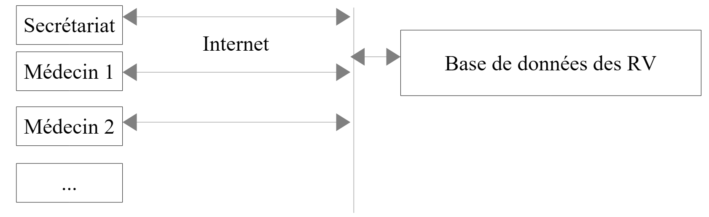
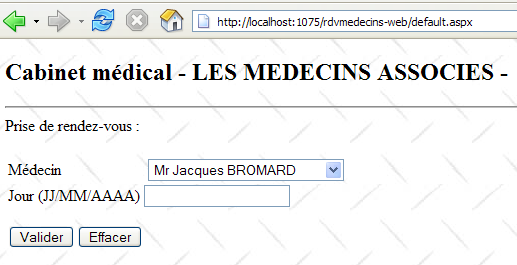

2. Das „ “: Eine Fallstudie
2.1. Das Problem
Kehren wir zu der Anwendung zurück, die wir erstellen möchten. Wir beginnen mit einer bestehenden Anwendung, die folgende Architektur aufweist:
 |
Für alle, die mehr erfahren möchten über:
- NHibernate: Einführung in das NHibernate-ORM [http://tahe.developpez.com/dotnet/nhibernate/];
- ASP.NET (WebForms)-Anwendung mit NHibernate und Spring: Erstellen einer dreischichtigen Webanwendung mit ASP.NET, Spring.NET und NHibernate [http://tahe.developpez.com/dotnet/pam-aspnet/].
Wir möchten die vorherige Anwendung in diese umwandeln:
 |
wobei EF5 NHibernate ersetzt hat. Diese Anwendung dient als Ausgangspunkt für die Erkundung von EF5. Da Spring.NET es uns ermöglicht, Schichten einfach zu wechseln, ohne dass dabei etwas kaputt geht, wird Anwendung 2 dieselbe Schicht [ASP.NET] wie Anwendung 1 verwenden. Da sich dieses Dokument auf EF5 konzentriert, werden wir nicht erläutern, wie diese Schicht implementiert wird. Wir werden sie in Anwendung 2 integrieren, um zu überprüfen, ob sie funktioniert. Wir werden lediglich die Änderungen erläutern, die in der Spring.NET-Konfigurationsdatei vorgenommen werden müssen.
Die Fallstudie lautet wie folgt: Wir möchten Ärzten einen Terminplanungsdienst anbieten, der nach folgendem Prinzip funktioniert:
- Ein Verwaltungsdienst übernimmt die Terminplanung für eine große Anzahl von Ärzten. Dieser Dienst kann aus einer einzigen Person bestehen. Das Gehalt dieser Person wird unter allen Ärzten aufgeteilt, die den Terminservice nutzen;
- Die Verwaltungsstelle und alle Ärzte sind mit dem Internet verbunden;
- Termine werden in einer zentralen Datenbank erfasst, auf die die Verwaltungsstelle und die Ärzte über das Internet zugreifen können;
- Termine werden normalerweise vom Verwaltungspersonal vergeben. Sie können aber auch von den Ärzten selbst vergeben werden. Dies ist insbesondere dann der Fall, wenn der Arzt am Ende einer Konsultation einen neuen Termin für den Patienten vereinbart.
Die Architektur des Terminplanungsdienstes ist wie folgt aufgebaut:
 |
Ärzte können effizienter arbeiten, wenn sie sich nicht mehr um die Terminverwaltung kümmern müssen. Bei einer ausreichenden Anzahl von Ärzten ist ihr Beitrag zu den Betriebskosten der Verwaltung minimal. Wir nennen die Anwendung [RdvMedecins]. Nachfolgend finden Sie Screenshots, die die Funktionsweise veranschaulichen.
Die Startseite der Anwendung sieht wie folgt aus:

Von dieser ersten Seite aus führt der Benutzer (Sekretär, Arzt) eine Reihe von Aktionen durch. Diese stellen wir im Folgenden vor. Die linke Ansicht zeigt den Bildschirm, über den der Benutzer eine Anfrage stellt; die rechte Ansicht zeigt die vom Server gesendete Antwort.
 |
 |
 |
 |
 |
2.2. Die Datenbank
Die von der NHibernate-Anwendung verwendete Datenbank ist eine MySQL5-Datenbank mit vier Tabellen:

Wir werden diese als Vorlage für den Aufbau all unserer Datenbanken verwenden.
2.2.1. Die Tabelle [DOCTORS]
Sie enthält Informationen zu den Ärzten, die von der Anwendung [RdvMedecins] verwaltet werden.
 |  |
- ID: die ID-Nummer des Arztes – der Primärschlüssel der Tabelle
- VERSION: Eine Zahl, die die Version der Zeile in der Tabelle angibt. Diese Zahl wird bei jeder Änderung an der Zeile um 1 erhöht.
- LAST_NAME: der Nachname des Arztes
- FIRST_NAME: der Vorname des Arztes
- TITLE: Anrede (Frau, Frau, Herr)
2.2.2. Die Tabelle [CLIENTS]
Die Patienten der verschiedenen Ärzte werden in der Tabelle [CLIENTS] gespeichert:
 |  |
- ID: die ID-Nummer des Kunden – der Primärschlüssel der Tabelle
- VERSION: Nummer, die die Version der Zeile in der Tabelle identifiziert. Diese Nummer wird bei jeder Änderung an der Zeile um 1 erhöht.
- LAST_NAME: der Nachname des Kunden
- VORNAME: der Vorname des Kunden
- ANSPRECHFORM: die Anrede (Frau, Frau, Herr)
2.2.3. Die Tabelle [SLOTS]
Sie listet die Zeitfenster auf, in denen Termine verfügbar sind:
 |
 |
- ID: ID-Nummer für den Zeitblock – Primärschlüssel der Tabelle
- VERSION: Nummer, die die Version der Zeile in der Tabelle identifiziert. Diese Nummer wird bei jeder Änderung an der Zeile um 1 erhöht.
- DOCTOR_ID: ID-Nummer, die den Arzt identifiziert, zu dem dieses Zeitfenster gehört – Fremdschlüssel auf die Spalte DOCTORS(ID).
- START_TIME: Startzeit des Zeitfensters
- MSTART: Startminute des Zeitfensters
- HFIN: Endzeit des Zeitfensters
- MFIN: Endminuten des Zeitfensters
Die zweite Zeile der Tabelle [SLOTS] (siehe [1] oben) gibt beispielsweise an, dass Zeitfenster Nr. 2 um 8:20 Uhr beginnt und um 8:40 Uhr endet und der Ärztin Nr. 1 (Frau Marie PELISSIER) zugeordnet ist.
2.2.4. Die Tabelle [RV]
Sie listet die für jeden Arzt gebuchten Termine auf:
 |
- ID: eindeutige Kennung für den Termin – Primärschlüssel
- DAY: Tag des Termins
- SLOT_ID: Terminzeitfenster – Fremdschlüssel auf die Spalte [ID] der Tabelle [SLOTS] – bestimmt sowohl das Zeitfenster als auch den beteiligten Arzt.
- CLIENT_ID: ID des Kunden, für den die Reservierung vorgenommen wird – Fremdschlüssel auf der Spalte [ID] der Tabelle [CLIENTS]
Diese Tabelle unterliegt einer Eindeutigkeitsbeschränkung für die Werte der verknüpften Spalten (DAY, SLOT_ID):
Wenn eine Zeile in der Tabelle [RV] den Wert (DAY1, SLOT_ID1) für die Spalten (DAY, SLOT_ID) enthält, darf dieser Wert an keiner anderen Stelle vorkommen. Andernfalls würde dies bedeuten, dass zwei Termine zur gleichen Zeit für denselben Arzt gebucht wurden. Aus Sicht der Java-Programmierung löst der JDBC-Treiber der Datenbank in diesem Fall eine SQLException aus.
Die Zeile mit der ID 7 (siehe [1] oben) bedeutet, dass am 10.09.2006 ein Termin für Slot Nr. 10 und Kunde Nr. 2 gebucht wurde. Die Tabelle [SLOTS] gibt an, dass Slot Nr. 10 dem Zeitfenster von 11:00 bis 11:20 Uhr entspricht und zu Arzt Nr. 1 (Frau Marie PELISSIER) gehört. Die Tabelle [CLIENTS] gibt an, dass Patient Nr. 2 Frau Christine GERMAN ist.
Diese Fallstudie war Gegenstand eines Java-Artikels [http://tahe.developpez.com/java/primefaces], in dem das Hibernate-ORM für Java verwendet wird.